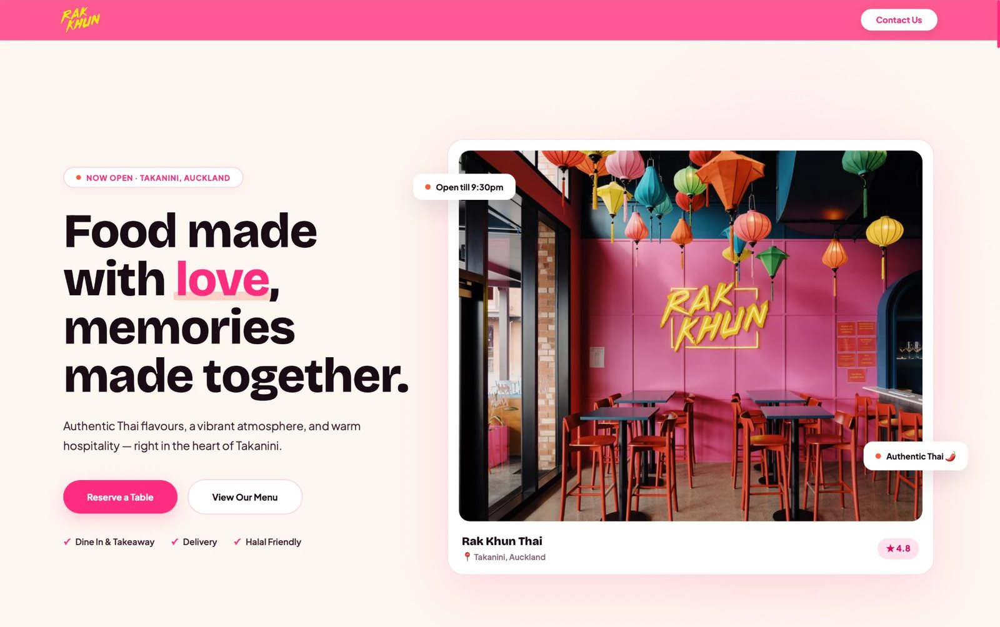

Did you show up? Websites built for restaurants, cafés and food trucks — found on Google and AI search alike. No tech headaches, no wasted menu.
Not a generic small-business template — a site built around how people actually decide where to eat, whatever's on your menu.
Prices change, dishes come and go, and specials shouldn't need a phone call to your web developer. We build menu pages you can update yourself — or hand to us on a care plan — so what's online always matches what you're serving.
The gap between "I'm hungry" and "I've got a booking" should be one tap, not five. Every site we build puts click-to-call, your ordering platform, and directions right where people expect them.
Nothing loses a customer faster than driving over to a locked door. We set your hours up correctly from day one, and help you keep your website and Google Business Profile lined up as they change.
Your food is the best marketing you have. We make sure it's presented properly — bold, appetising, and built to be the first thing people notice.
Most people are deciding where to eat standing outside, or scrolling on their phone at home. Your site needs to work brilliantly on mobile, because that's where the decision actually happens.
More people are asking ChatGPT and Siri where to eat, not just Googling it. We structure every site so AI tools can read, understand, and recommend your restaurant, café or food truck.
The way people find somewhere to eat is changing fast. More and more customers are asking ChatGPT, asking Siri, or searching through AI tools instead of just Google. We make sure your website is ready for that, whatever you serve.
Every website we build is structured so AI tools can read, understand, and recommend your restaurant, café or food truck — so when someone asks where's good to eat nearby, your name has a real chance of coming up.
We don't just talk about it — here's a real restaurant website we built, live right now.

Mobile-first, tabbed menu, one-tap call, order & directions. Live now, turning searches into bookings.
Visit rakkhun.co.nz →